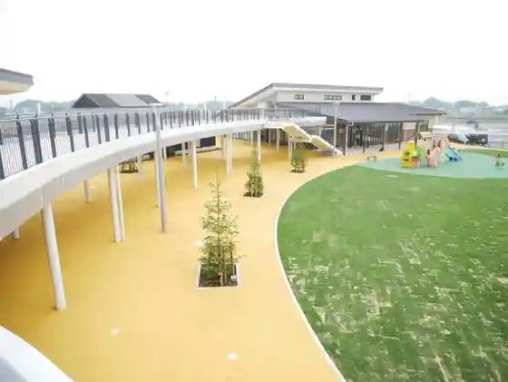
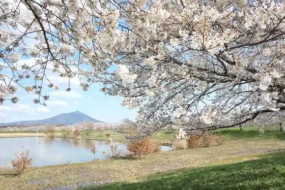
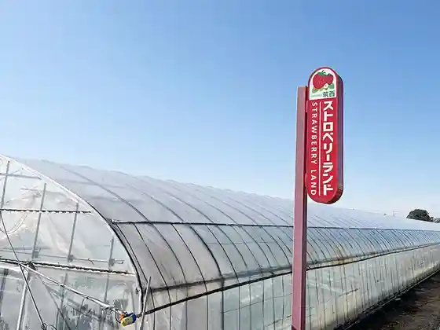
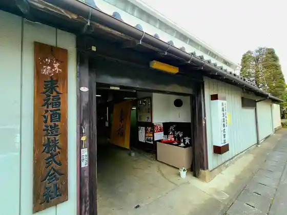

Roadside Station Guranterasu Chikusei
Chikusei, Ibaraki · 0296-45-5055 · Official / source link

Boshi Shima Yusuichi
Chikusei, Ibaraki · 0296-20-1160 · Official / source link

Toei Yama Sen Myo Tera
Chikusei, Ibaraki · 0296-37-6749 · Official / source link
Sutoroberii Land Chikusei
Chikusei, Ibaraki · 080-1286-4403 · Official / source link

Raifuku Shuzo
Chikusei, Ibaraki · 0296-52-2448 · Official / source link

Mokatetsudo SL Ressha
Chikusei, Ibaraki · 0285-84-2911 · Official / source link
Shimodate Art Museum
Chikusei, Ibaraki · 0296-23-1601 · Official / source link
Ake no Genki Kan
Chikusei, Ibaraki · 0296-52-7111 · Official / source link
Kan Saichu Honpo Kogetsu Iori Shimodate Main Shop
Chikusei, Ibaraki · 0296-22-2513 · Official / source link
Miyayama Furusato Fureai Park
Chikusei, Ibaraki · 0296-52-3610 · Official / source link
(Ari) Arai Seimen Tokoro (Tena Eudon'arai)
Chikusei, Ibaraki · 0296-22-3075 · Official / source link
Itaya Namiyama Memorial Museum
Chikusei, Ibaraki · 0296-25-3830 · Official / source link
Nichiren Shu Shion Tera
Chikusei, Ibaraki · 0296-37-4673 · Official / source link
CAFE SORA
Chikusei, Ibaraki · 0296-37-6579 · Official / source link
Hirosawa Kensei General Park
Chikusei, Ibaraki · 0296-57-5631 · Official / source link
Kan Castle Ruins
Chikusei, Ibaraki · 0296-22-0183 · Official / source link
Kannon In (Ritsu In)
Chikusei, Ibaraki · 0296-24-4081 · Official / source link
Gosho Shrine
Chikusei, Ibaraki · Official / source link
(Ari) Na Kaori Ya
Chikusei, Ibaraki · 0296-21-0566 · Official / source link
JA Kita Tsukuba Kyowa Chokubai Tokoro
Chikusei, Ibaraki · 0296-57-9955 · Official / source link
Gongyo Kawa Saikuringurodo
Chikusei, Ibaraki · 0296-20-1160 · Official / source link
Men Workshop
Chikusei, Ibaraki · 0296-37-6555 · Official / source link
Nakadate Kan'onji
Chikusei, Ibaraki · Official / source link
Soba Tokoro Tomo
Chikusei, Ibaraki · 090-8816-8654 · Official / source link
Yakiniku Wako
Chikusei, Ibaraki · 0296-28-2903 · Official / source link